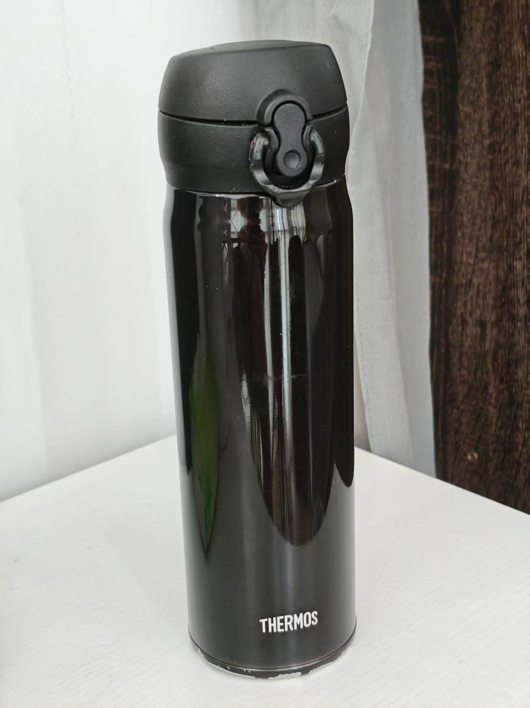
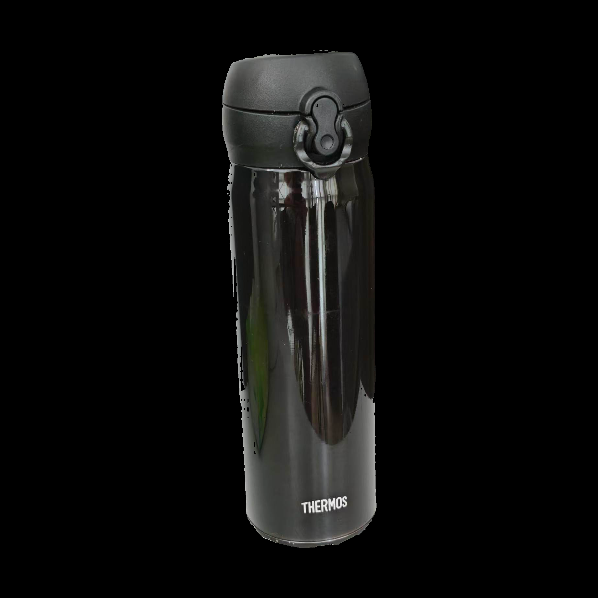
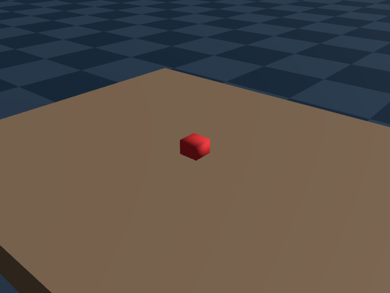

ROBOT ENVIRONMENT PIPELINE
把一句话、一张图或一段视频，变成可检查的仿真环境
x2env Harness 是一位“严谨的项目经理”：它让模型理解需求，让资产系统找物体，让物理引擎真的跑起来，并把每一步的证据、失败和版本都保存下来。
文图影
任意组合输入
HARNESS理解 · 编排 · 留证
ENV✓场景 + 媒体 + 报告
01INTERACTIVE ARCHITECTURE
点一下每个部件，看看里面是什么
实线是当前主链路，虚线是规划中的观察能力。点击或触碰节点会高亮它影响的上下游，并在右侧显示内部结构、取舍和当前状态。
一次请求的可信边界
→
→
→
↓
←
←
←
MODEL NOTE
当前不是“大模型 + 小 Codex VLM”的正式双模型架构。固定实验入口的所有内部 Codex 角色统一使用 openai/gpt-5.6-terra 与 reasoning=max。低成本视觉观察员仍是后续项；历史候选为 Qwen2.5-VL 3B/7B，且不能推翻物理证据。
x2env.compile
把已解析场景与带版本的资产编译为 Genesis 可加载的确定性场景；静态检查通过也不代表物理通过。
- 实现
- skill_execution.py:49–62
- Harness 调用
- harness.py:824–875
- 真实证据
- S01 · 0.008103s · succeeded
- 产出
- CompiledScene + receipt
x2env.replay
真正启动 Genesis，用 baseline 与 half_dt 两套时间步采集轨迹、接触、帧和视频；失败媒体同样保留。
- 实现
- skill_execution.py:64–74
- Harness 调用
- harness.py:877–946
- 真实证据
- S01 · 120.397165s · succeeded
- 复算
- copy-run 双 profile · 26/26
x2env.validate
读取当前场景、fresh observation 与诊断回执，分别判断物理和视觉；模型不能改动固定阈值。
- 实现
- skill_execution.py:76–122
- Harness 调用
- harness.py:1037–1077
- 真实证据
- S01 · 0.004727s · succeeded
- 结论
- physical 26/26 · visual passed
CORE CODE MAP
核心 Agent 怎样循环，提示词放在哪里？
它不是一个无限自问自答的 Agent。Harness.resume() 读取已保存状态，_resume() 按当前产物跳到 resolve、compile、replay、observe、diagnose 或 validate；修订次数受预算限制。
SceneIntent 的角色约束直接在代码中组装；它要求模型只给 JSON 提案，不得声称资产、仿真或验证成功。没有单独的 SYSTEM_PROMPT.md。
self_improving/harness/x2env/codex.py:362–408统一 transport 把 schema 附到提示词，保存 prompt.txt，再以只读、禁工具的 Codex 子进程通过 stdin 发送。其他诊断、检索、重建角色各有自己的短提示词构造器。
02ONE REQUEST, END TO END
一次输入，究竟经历了什么？
选择一个案例，然后播放。流程中的每一步都会显示它接收什么、产出什么，以及为什么可能停下来。
等待播放
也可以直接点击上方步骤
03REAL RUNS, INCLUDING FAILURES
用真实输入验证，结果照实展示
这里区分两条证据线：2026-09-13 canonical harness 的四模态 matrix v2，以及 2026-09-06 稳定核心的 can-on-plate 验收。两者不能互相冒充。
真实通过真实失败 / 阻断范围受限
 T
T“Place a can on a plate”
实际执行提示词为 “Place a can on top of a plate.”。已有 RoboTwin 资产被编译成场景，真实 SAPIEN 跑满 900 步并录制 120 帧；独立验证为 pass。
- 物体
- 071_can + 003_plate
- 验证
- fail 0 · not_run 0
- 边界
- 稳定核心案例，不是 canonical matrix v2


I用户附图：黑色保温杯
模型识别为 insulated bottle，分割与 7.5 MB 新几何均已真实生成；但派生授权不覆盖这张图，系统拒绝注册资产，未进入编译与物理回放。
- 终态 / 耗时
- blocked_license · 112.46 秒
- 停止阶段
- asset.resolve · revision 3
- 保留证据
- 失败包 + 2 图 + 15 日志

I只给红方块图片
没有隐藏文字提示。Harness 从图片识别红方块和桌面，完成资产解析、回放、视觉与物理验证。
- 耗时
- 290.76 秒
- 物理 / 视觉
- passed / passed
- 历史失败
- 此前 4 次，均保留
I+T
红色参考图 + “改成蓝色”
图片决定物体类别，文字拥有颜色优先级。系统生成不可变的蓝色资产子版本，并保留父版本。
- 耗时
- 383.39 秒
- 物理断言
- 26 / 26
- 历史失败
- 视觉、键序、坏 JSON 共 3 次
V
只给 41 帧视频
输入有 33 个独特帧。当前能力从视频恢复静态环境；它还不能理解并复演视频中的机器人动作。
- 耗时
- 312.48 秒
- 物理 / 视觉
- passed / passed
- 能力边界
- 静态环境，不含动作轨迹
ASSET SOURCE TRACE
资产复用、Web 搜索、三维重建：接线与执行证据
“执行过”只说明相关组件真的运行；只有走完 compile、replay、validate 和 package，才算完整工作流通过。
YUXIN · LOCAL完整链路通过
本地资产复用
Registry 投影交给原 Yuxin RoboTwinLocalProvider.search_phrases，再经过尺寸、Genesis 预览和视觉门；不是直接查表后冒充 provider 已执行。
- 接入位置
- adapters/yuxin.py:242–265
- 编排入口
- deployment.py:308–311
- 执行证据
- S01 workflow 07321d67… · 13 operations
- 最终结果
- workflow succeeded · physical 26/26 · visual passed
YUXIN · WEB已执行，未闭环
联网搜索与下载
Web resolver 复用 Yuxin 的 load_providers 与 tiered_search；Harness 在外层补许可、格式、规范化和来源版本检查。
- 接入位置
- deployment.py:314–353 · yuxin.py:267–331
- 组件实跑
- Khronos Box · search 2.296611s · fetch 0.511125s
- workflow
- 916be468… · red cube → red block 真修订
- 最终结果
- blocked_license · 78.564775s；无完整 Web E2E pass
GUJIE · REBUILD已执行，未闭环
图片三维重建
Codex 只提出分割点、框和物理参数；固定 Gujie seam 实际运行 SAM2 分割与 TRELLIS 重建，再由 Harness 规范化、登记、预览和审查。
- 接入位置
- deployment.py:357–402 · reconstruction.py:65–310
- 最好推进
- 15dc259c… · asset.resolve + ground 成功，compile 才失败
- 最新附图
- 82779899… · 7,507,928-byte GLB 已生成
- 最终结果
- blocked_license · 112.463029s；无完整重建 E2E pass
失败没有被删掉展开来源与矩阵中的真实失败+
案例停止位置耗时系统学到了什么
S02 ×4部署 / 澄清 / 视觉 / 打包50–317s修正路径边界、字段定位、上下文哈希和打包
S03 ×2视觉 / 打包261–311s失败 workflow 保持失败，不回填为成功
S04 ×3视觉 / 完成门 / 模型 JSON51–408s增加键序无关核验与一次有界语法重生成
保温杯 ×1资产许可 / 派生授权112.46s分割和新几何已产生，但未获准注册，安全停止
Web ×1二次检索后的许可门78.56sYuxin 搜索和 Codex 词项修订都执行，unknown license 不放行
重建 ×2编译 / 视觉资产门259–267s新几何、规范化和预览完成；失败仍不计完整来源通过
✓
已经证明四种简单输入可走完理解、资产、编译、双 profile 回放、观察、验证和出包。
!
尚未证明复杂容器、关节、多点支撑、机器人策略、数据采集和通用新资产重建。
04GAPS & NEXT STEPS
现在缺什么，下一步怎么补
优先级按“能否让研究结论更可信、让新案例更容易成功”排序。每项都有可验收的终点。
补齐真实新资产来源
让网络检索与图像重建在许可证、来源版本、模型身份都可追踪的条件下稳定工作。
- 至少 1 个 web 完整案例
- 至少 1 个授权重建案例
- 复制后仍可预览与运行
进行中
从方块走向真实空间关系
验证凹形容器、多个接触点和可开合关节；这些问题不能靠一张“看起来正确”的图解决。
- 动态单支撑真实闭环
- containment 与孔洞几何
- 关节状态与碰撞验证
合同 / 组件阶段
更可靠的恢复与交付
完善暂停后续跑、失败指纹、另外两个隔离复制运行，并把固定门接入持续集成。
- 三份成功包独立 copy-run
- 中等 / 困难矩阵
- 跨机器可诊断部署
部分基础已在
VLM、机器人与数据闭环
轻量视觉模型只负责发现“少了什么、外观是否明显不对”；物理结论继续由仿真证据控制。
- hash-bound VLM 观察回执
- 机器人 policy 实际执行
- 数据采集、评估与晋升
尚未接入主链
术语翻译
Harness把多步工具可靠串起来的控制层
Grounding把“杯子”对应到某个真实资产与尺寸
Replay让场景在物理引擎中随时间运行
CAS / Hash用内容指纹保证证据没被偷换
VLM能读图的视觉语言模型